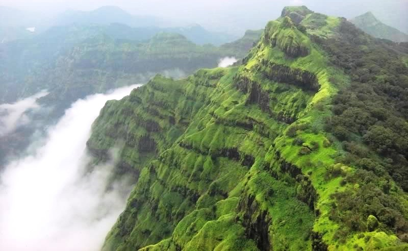

Kamshet
All of the nature and architecture sites I am featuring on this page are in the state of Mahrashrtra because that is where me and my family are from
This first site is called Kamshet. Kamshet is located in Pune district in the state of Maharashtra, India. It is a very popular place for paragliding and if go, I would love to try paragliding here. It is accessible by road and rail from Mumbai and Pune. Kamshet is home to small villages that are built in the traditional style - with mud, thatch and reeds.
Kaas Plateau
 This second site is the Kaas Plateau. It is known for various types of seasonal wild flowers bloom and numerous species of endemic butterflies annually in the months of August and September. Kaas has more than 850 different species of flowering plants. These include orchids, shrubs such as the Karvy, and carnivorous plants such as Drosera Indica. Kaas Pathar is a plateau made from volcanic rocks in the Satara district of Maharashtra, and comes under the biosphere of the Western Ghats.
This second site is the Kaas Plateau. It is known for various types of seasonal wild flowers bloom and numerous species of endemic butterflies annually in the months of August and September. Kaas has more than 850 different species of flowering plants. These include orchids, shrubs such as the Karvy, and carnivorous plants such as Drosera Indica. Kaas Pathar is a plateau made from volcanic rocks in the Satara district of Maharashtra, and comes under the biosphere of the Western Ghats.
I would love to spend a whole day here, gathering flowers and taking nice pictures!
Panchgani
Panchgani is a hill station southeast of Mumbai in India’s Maharashtra state. It’s known for the Table Land, a huge volcanic plateau. Lookouts like Sydney Point and Parsi Point offer views of Dhom Dam lake and Kamalgad Fort, used as a prison by the British in the early 19th century. To the southeast, the Rajpuri Caves are surrounded by sacred ponds and contain a temple dedicated to the Hindu god Lord Kartikeya.
This would be the perfect place to go on a long road traip and enjoy viewing nature.